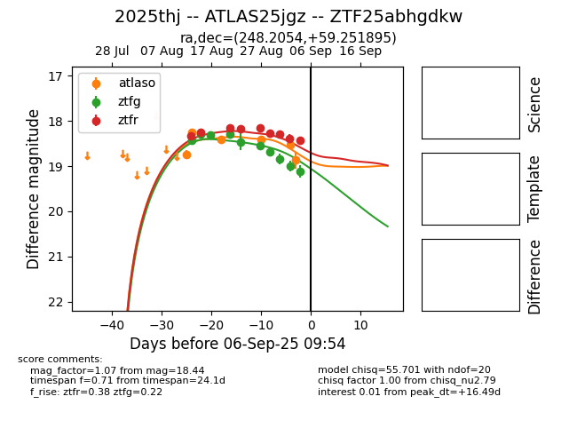

Target 2025thj at 2025-08-27 06:37, see:
FINK: fink-portal.org/ZTF25abhgdkw
Lasair: lasair-ztf.lsst.ac.uk/objects/ZTF25abhgdkw
ALeRCE: alerce.online/object/ZTF25abhgdkw
TNS: wis-tns.org/object/2025thj
YSE: ziggy.ucolick.org/yse/transient_detail/2025thj
alt names
ZTF25abhgdkw (ztf,fink)
2025thj (tns,yse)
ATLAS25jgz (atlas)
coordinates:
equatorial (ra, dec) = (248.2054,+59.25189)
galactic (l, b) = (89.3032,+40.58811)
photometry
last atlaso=18.40, ztfg=18.55, ztfr=18.16
3 atlaso, 6 ztfg, 5 ztfr detections
